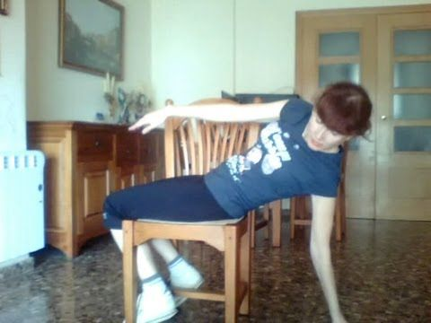

Welcome to Ejercicios de abdominales efectivos
BBC News , Mundo Ir al contenido Secciones Noticias América Latina Internacional Coronavirus Hay Festival Economía Ciencia Salud Cultura Tecnología Video Centroamérica Cuenta Noticias América Latina Internacional Coronavirus Hay Festival Economía Ciencia Salud Cultura Tecnología Video Centroamérica Cuenta
Qué tipo de ejercicios abdominales son más efectivos y cuáles deberías evitar
BBC News Mundo Redacción 28 septiembre 2018Fuente de la imagen, Getty Images
Pie de foto,Una cosa es tener los abdominales bien trabajados y otra es poder mostrar la famosa tableta de chocolate .
Hay que partir de la premisa que un abdomen bien trabajado no significa que se lucirá la llamada tableta de chocolate .
Mientras que lo segundo depende más de una alimentación adecuada, lo primero es consecuencia directa del ejercicio.
¿Por qué es tan difícil lograr los abdominales perfectos?Teniendo esto último claro, lo importante es conocer cuáles son los ejercicios más efectivos y cuáles se deberían evitar para fortalecer esta zona del cuerpo, una de las más importantes para potenciar el rendimiento físico de las personas.
El más conocido de todos, y que se asocia directamente al trabajo abdominal, es el clásico ejercicio de estar de espaldas al suelo, con las piernas encogidas y elevando el tronco, que en inglés se conoce como sit ups .
Fuente de la imagen, Getty Images
Pie de foto,Subir el cuerpo hasta las rodillas es una de los errores más comunes al hacer abdominales.
Sin embargo, con el tiempo se descubrió que esta rutina es una de las menos efectivas para trabajar los músculos abdominales ya que la gente suele ejecutarla de mala forma , subiendo el cuerpo hasta tocar las rodillas.
Saltar Quizás también te interese y continuar leyendo Quizás también te interese Coronavirus: 5 consejos simples para volver a ponerte en forma después de los confinamientos Paso a paso: cómo hacer estos sencillos ejercicios para aliviar el dolor de rodillas en tu casa Qué tan rápido dejamos de estar en forma cuando abandonamos el ejercicio Gordibuena empieza a usarse para empoderar a la mujer pero acaba siendo un término sexistaFinal de Quizás también te interese
Al despegar la columna del suelo se transfiere el trabajo que estamos haciendo en el abdomen a una musculatura interna como lo son los flexores de la cadera , le dijo a la BBC el preparador físico español Juan Francisco Marco.
Esto hace que aumente la presión inguinal y también se genere un problema, por exceso de trabajo, a nivel lumbar .
La fórmula
Marco aconseja buscar ejercicios que se centren en la musculatura abdominal, los rectos de abdomen, como el crunch o el curl , en los que se produce un encogimiento de tronco y además trabaja en conjunto con la musculatura oblicua del abdomen, lo que es la musculatura lateral .
Fuente de la imagen, Getty Images
Pie de foto,En el crunch no se necesita despegar la parte baja de la columna del suelo.
El crunch es un ejercicio que se asemeja en la posición de partida al sit-up , pero se diferencia en que no se tiene que despegar la columna lumbar del suelo para producir el encogimiento del tronco.
Eso se complementa activando la musculatura trasversa del abdomen, el típico movimiento de meter barriga, que se trabaja mucho en los conocidos abdominales hipopresivos , agregó.
Qué son los abdominales hipopresivos y cómo te ayudan a reducir la cinturaEsta combinación vendría a ser un punto de partida ideal.
Para empezar un entrenamiento de abdominales recomendaría arrancar con un ejercicio básico como es el crunch y a partir de ah í ir progresando hacía ejercicios más complicados , como ejemplo añadir un poco de peso, como un disco encima del pecho para tener más resistencia , expresó Marco.
Luego acabar con unas planchas isométricas, una planchas laterales y luego restando puntos de apoyo. Siempre dependiendo del nivel de las personas .
La ejecución
El preparador físico español aclara que hay casos específicos en los que es posible que un tipo de ejercicio sea más efectivo que otro, como sucede con personas que están en un nivel más avanzado, pero que hay rutinas como la llamada silla del capitán -apoyado en los brazos se levantan las piernas suspendidas- que depende mucho de su ejecución.
Es un ejercicio buenísimo, pero también ocurre algo parecido a lo que pasa con los sit-up , explicó.
Fuente de la imagen, Getty Images
Pie de foto,Una persona puede tener unos abdominales fuertes debajo de la capa de grasa que los cubre.
Si lo haces con las piernas rectas, al elevarlas hasta que llegues al ángulo recto entre los muslos y el abdomen, lo que estás haciendo es un trabajo de los músculos flexores de la cadera y menos de la musculatura abdominal .
5 de los errores más comunes que cometemos al hacer abdominalesPero si el punto de partida es ese ángulo recto y a partir de ahí subes los muslos, si estarás haciendo un excelente trabajo de rectos de abdomen y de oblicuos .
Un caso parecido ocurre con el encogimiento con rodillo, un muy buen ejercicio hipopresivo , pero que al ser de nivel avanzado requiere de una musculatura lumbar trabajada y fuerte, ya que de lo contrario te puede causar lesiones.
Marco también recomendó evitar dos versiones de ejercicios abdominales muy populares.
Fuente de la imagen, Getty Images
Pie de foto,La plancha es uno de los ejercicios más efectivos para los abdominales.
Uno es la elevación de piernas desde el suelo, cuando se está acostado boca arriba y se produce un movimiento hacia arriba, ya que es un ejercicio que implica más los músculos flexores de la cadera y menos de la abdominal .
¿Es realmente bueno hacer 2.000 abdominales al día?Este ejercicio es aún más peligroso cuando se realiza la variante en la que a una persona acostada, le retienen los pies en el aire y le lanzan las piernas hacia el suelo, teniendo que detenerlas en seco antes que hagan contacto.
Eso es una barbaridad ya que hay un gravísimo riesgo de una hiperlordosis lumbar exagerada, que tiene como consecuencias hernias discales , lamentó Marco.
El otro ejercicio es el de la bicicleta.
Lo que pasa es que la gente resalta que se nota mucho en la zona baja del abdomen, pero es que por ahí también pasan los músculos flexores y confunden el trabajo de esta región con el del abdomen .
Ahora puedes recibir notificaciones de BBC News Mundo. Descarga la nueva versión de nuestra app y actívalas para no perderte nuestro mejor contenido.
Contenido relacionado
¿Cómo puedes trabajar los músculos del abdomen sin hacer abdominales?
Lo primero que se tiene que definir es si se quiere fuerza en los músculos de la zona o lo que se busca es tener una mayor definición, ya que dependiendo del objetivo se puede conseguir lo primero sin necesidad de lo segundo.
24 mayo 2018Principales noticias
¿Me verá Tito? : cómo fue crecer en la Yugoslavia del líder comunista
5 horasPor qué se desintegró Yugoslavia
25 junio 2021En gráficos: cómo se derrumbó el edificio de Miami en tan solo 12 segundos
25 junio 2021No te lo pierdas
Qué se sabe de las posibles causas del derrumbe de un edificio de apartamentos en Miami
25 junio 2021Vimos a gente en los balcones pidiendo auxilio : el horror por el derrumbe de un edificio en Miami
25 junio 2021El impactante atraco del Grupo Lázaro, el equipo de élite de Corea del Norte que casi roba US$1.000 millones en un solo asalto
24 junio 2021Solo quiero recuperar mi vida : las explosivas declaraciones de Britney Spears frente a un tribunal en el caso de su tutela legal
23 junio 2021Quién era John McAfee, el controvertido pionero de los antivirus que huyó de la Justicia de EE.UU. y acabó muriendo en España
23 junio 2021Fui un idiota : el británico que perdió US$250.000 víctima de una boda falsa en Ucrania
23 junio 2021De Groenlandia a la Amazonía: la cadena de interacciones de la que puede depender el futuro del planeta
23 junio 2021Delta plus: la nueva variante de covid-19 detectada ya en 10 países
23 junio 2021Descubrí que mi abuelo era un asesino mientras escribía su biografía
21 junio 2021Más leídas
1 Cuáles son las conclusiones del esperado informe del Ejército de EE.UU. sobre los ovnis 2 En gráficos: cómo se derrumbó el edificio de Miami en tan solo 12 segundos 3 Mi compañía valorada en US$.5.600 millones no tiene ninguna oficina : el multimillonario más joven de Reino Unido 4 El sorprendente hallazgo en China del hombre dragón , que podría ser una antigua especie humana hasta ahora desconocida 5 Qué puede pasar ahora en el caso de la tutela de Britney Spears tras el demoledor testimonio de la cantante 6 Quién es la primera víctima identificada del derrumbe del edificio de Miami y qué se sabe del resto de los afectados 7 ¿Me verá Tito? : cómo fue crecer en la Yugoslavia del líder comunista 8 Qué se sabe de las posibles causas del derrumbe de un edificio de apartamentos en Miami 9 Colombia: atacan a tiros el helicóptero en el que viajaba el presidente Iván Duque, quien resultó ileso 10 Por qué se desintegró Yugoslavia BBC News , Mundo Por qué puedes confiar en la BBC Términos de uso Sobre la BBC Política de privacidad Cookies Contacta a la BBC AdChoices / Do Not Sell My Info© 2021 BBC. La BBC no se hace responsable del contenido de sitios externos. Lee sobre nuestra postura acerca de enlaces externos.
